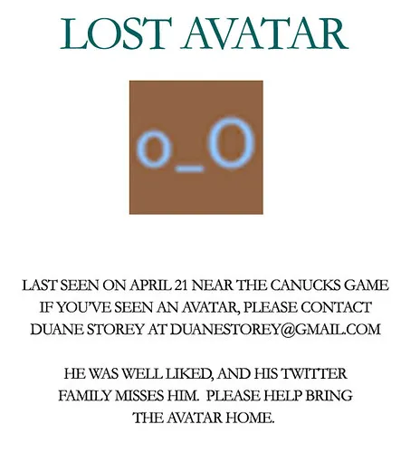

Please Fix Twitter

I've been using Twitter for a long time now, and the one universal constant in that time period has been the flakiness of the Twitter service. Even today, at least a year after some of these problems started cropping up, you still get the occasional "Fail Whale" when the servers can't keep up. Some of the other random problems I've witnessed lately are:
- disappearing avatars
- the inability to upload a new avatar
- missing background images on profiles
- flaky service (i.e. the Fail Whale)
- messages that appear 30 - 60 minutes after they were tweeted
Obviously running a service that can handle millions of people is no small effort. I've never tried to do it, and I imagine I'd have the same problems (or far worse problems) if I were put into that same situation. What is a bit scary though is that they've been working on these issues for over a year now, and if anything, I think in general things are getting worse.
Yes, it's a free service, so you can't expect a lot. But I don't want it to be a free service. Give me somewhere to pay and I'll gladly put my money where my mouth is. Any serious user would easily pay $10 a year for access to the service, and that's a decent amount of cash to help fix some of these problems.
So here's a question -- would you pay to use Twitter? If so, how much would you be willing to pay? Do you even care if you get anything in return (in my case, I would be happy to simply have a (+) beside my name so people know I helped support Twitter -- that's what popular BBS software in the past used to do).